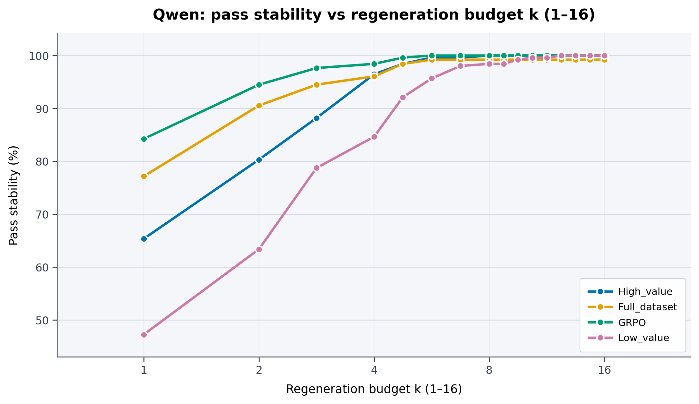

Can a compact set of high-value examples enable more effective post-training than full-scale noisy supervision?
Project Page
Sample-Efficient Post-Training for LEGO Spatial-Physics Reasoning
LEGO Brick Assembly turns language into executable 3D construction programs. We study how compact high-value data, physics-aware rewards, and test-time regeneration can improve semantic alignment, geometric fidelity, and physical stability.
Introduction
LEGO Brick Assembly challenges language models to synthesize compositional objects from modular bricks while satisfying precise spatial and physical constraints. Large-scale brick datasets contain more than enough examples, but they can also be noisy, redundant, and misaligned with the target object semantics.
This motivates a data-centric question: what makes a training example valuable for LEGO spatial-physics reasoning? We estimate value by measuring semantic consistency between a text description and the rendered LEGO structure, while filtering examples that violate physical constraints.
How should the learning objective exploit verifiable spatial and physical structure during LEGO assembly generation?
Method
High-Value Data Selection
We score demonstrations by rendered text-image alignment and physical feasibility, producing compact supervision that emphasizes examples useful for spatial-physics reasoning rather than raw dataset scale.
Physics--Voxel Policy Optimization
PVPO couples physical validity with voxel-space geometric alignment, encouraging generated programs to remain buildable while recovering the intended object shape and layout.
Physical validity
R_phys(o) = mean(valid bricks)
Voxel alignment
R_vox(o, o*) = 1 - normalized voxel distance
PVPO reward
R_PVPO = (1 - lambda) R_phys + lambda R_vox

Results
PVPO improves semantic alignment and voxel agreement while maintaining strong physical validity. The stability analysis shows that a small regeneration budget can substantially increase Stability@K before returns saturate.

Capability Showcase
The qualitative figures below are taken directly from the paper package and show object-level generation behavior across data-selection and PVPO-style settings.
Analysis
Data-Induced Physics-Reward Hacking
Full-scale noisy supervision can satisfy physical constraints while weakening semantic alignment. High-value data selection separates useful spatial-physics demonstrations from shortcut-prone examples.
Confidence and Selection
Calibration analysis compares best@k selection mechanisms against visual alignment scores, helping diagnose whether model confidence tracks semantic and structural quality.
Compute-Aware Inference
Regeneration improves stability, but the curve saturates. This makes the regeneration budget a practical knob for balancing quality and test-time cost.
Paper
This project page accompanies the paper Sample-Efficient Post-Training for LEGO Spatial-Physics Reasoning. Public paper and code links can be added here when available.
Code
The website is static and can be served with GitHub Pages. Reproduction code and checkpoints can be linked here after the anonymous release is finalized.
BibTeX
@misc{lego_spatial_physics_reasoning,
title = {Sample-Efficient Post-Training for LEGO Spatial-Physics Reasoning},
author = {Anonymous},
year = {2026},
note = {Anonymous preprint}
}